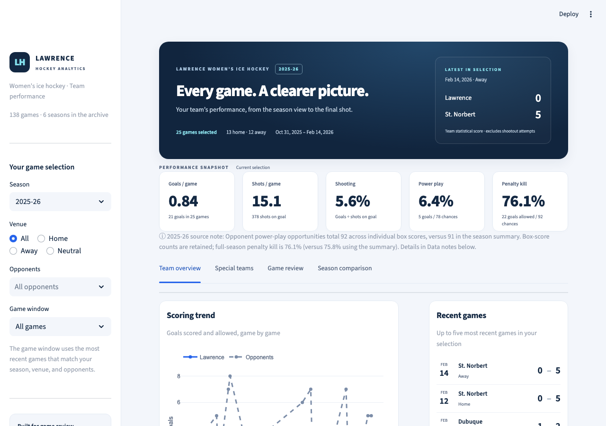
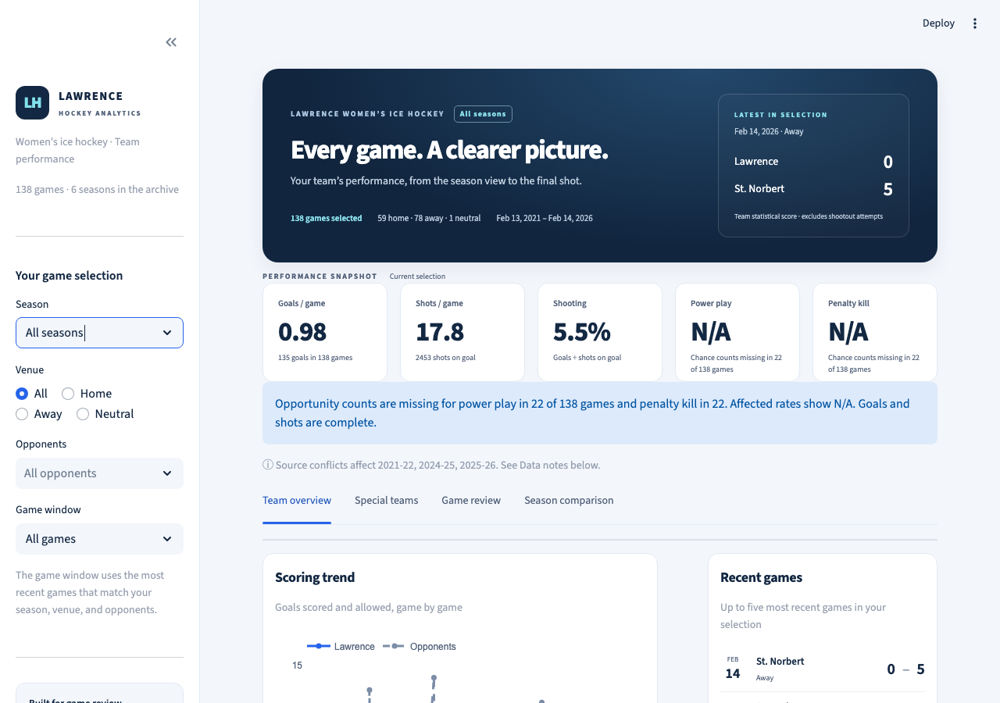
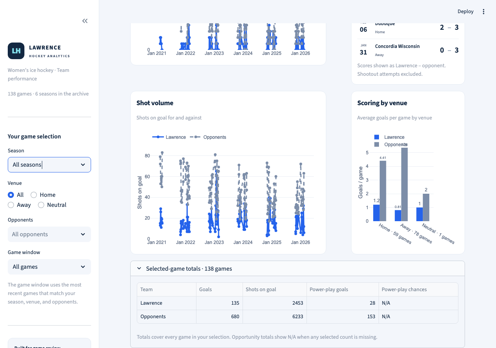
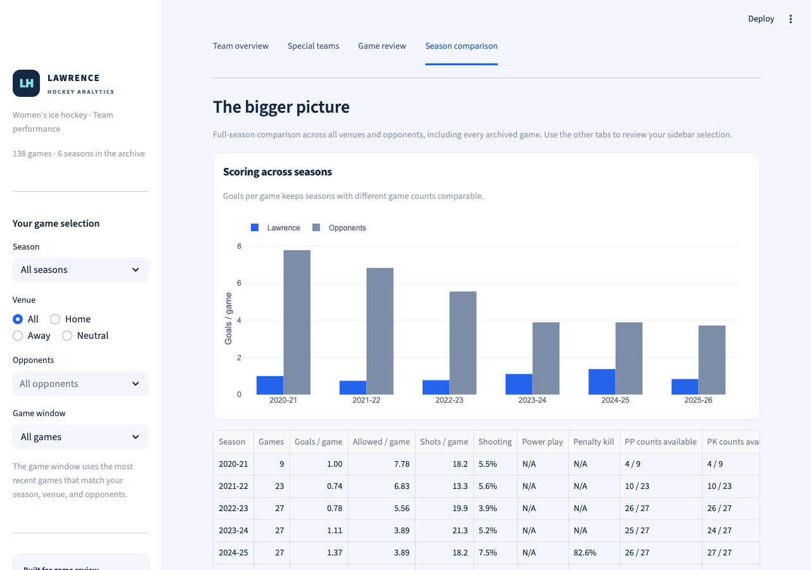
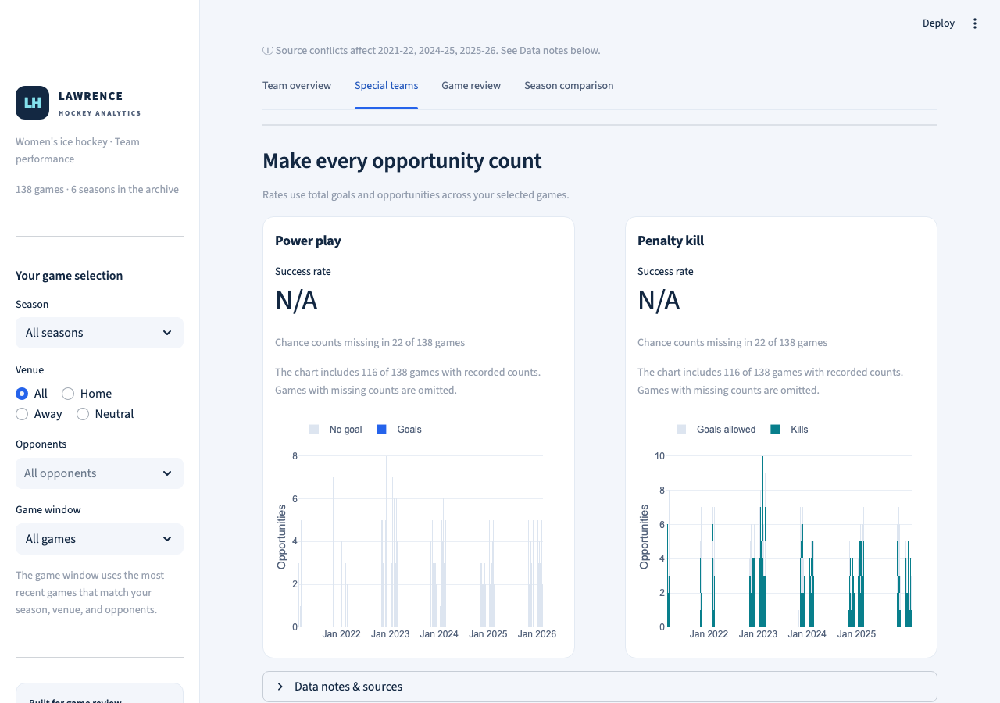
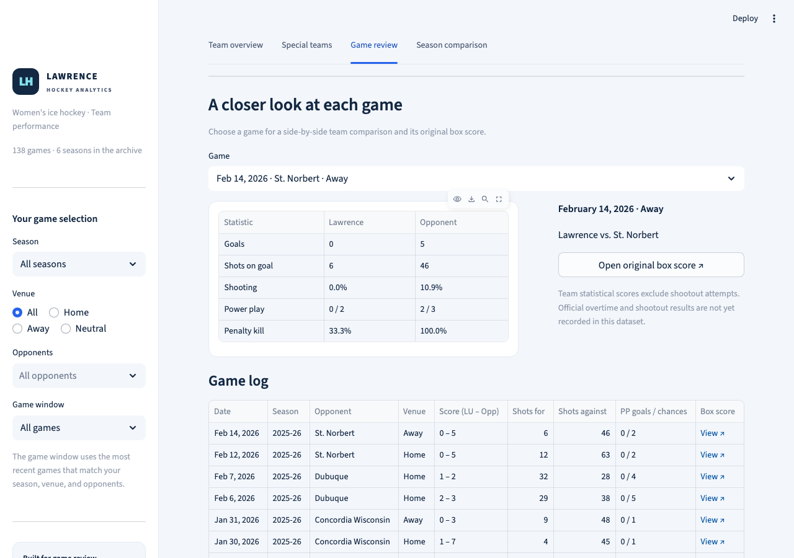

Six seasons of Lawrence hockey
A dashboard for comparing scoring, shots, and special teams across 138 women's hockey games. This short recording shows the main views and how the app handles gaps in the historical data.
36 seconds · Captions included · No audio. This page is a recorded walkthrough; filters are demonstrated in the video.
What the analysis found
Scoring and shot volume both fell in the most recent season.
Lawrence scored 1.37 goals per game in 2024–25 and 0.84 in 2025–26. Shots per game fell from 18.22 to 15.12, while shooting percentage fell from 7.52% to 5.56%. Those figures describe the change; they do not identify its cause.
Historical special-teams comparisons need care.
23 games have at least one missing power-play opportunity count. The dashboard keeps those values missing and shows N/A when a complete rate cannot be calculated. Source conflicts are recorded alongside the results.
Read the three findings and their limits, SQL explanations, and saved season comparison. The app uses Python, pandas, SQLite, Streamlit, and Plotly.
The walkthrough, step by step
1. Start with a season
The overview shows scoring, shots, special teams, and recent games.

2. Include every season
Select All seasons to combine the full archive. Venue, opponent, and recent-game filters still apply.

3. Check the totals
The selected-game totals table gives the counts behind the averages and percentages.

4. Compare full seasons
This view keeps season totals, game counts, and opportunity-data coverage together.

5. Check data coverage
A missing count is different from zero. Rates stay unavailable when their denominators are incomplete.

6. Review one game
Compare the two teams, open the original box score, or download the selected games.
